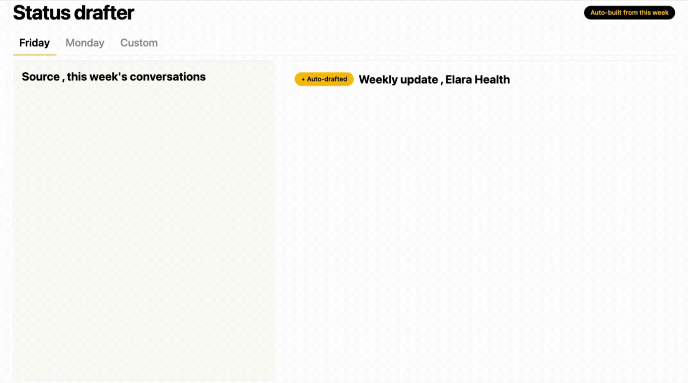
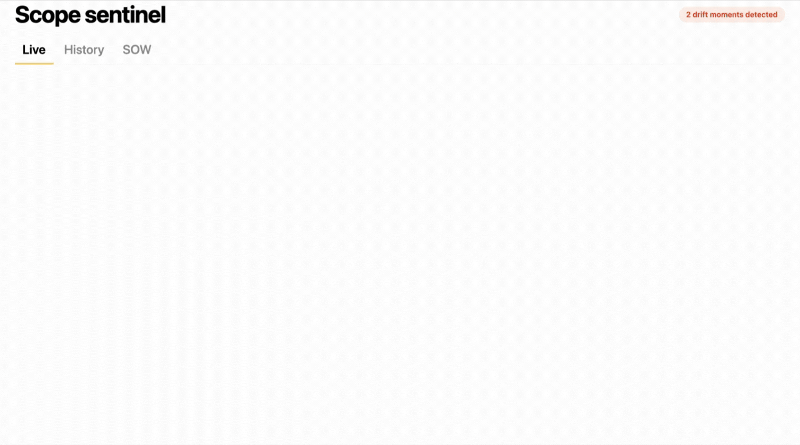
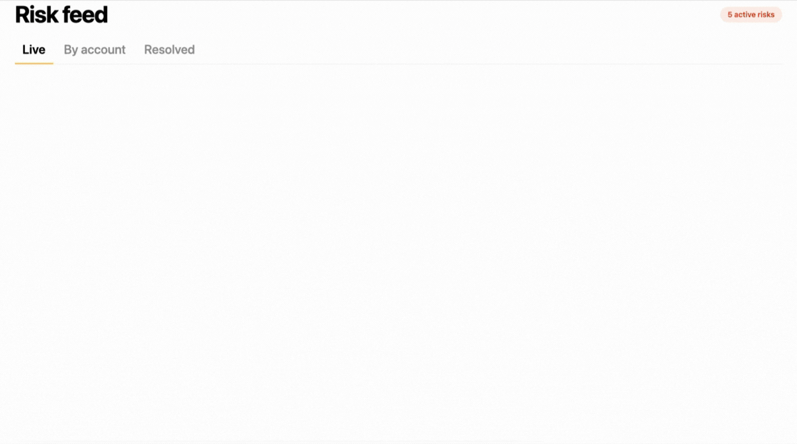

FOR · PROJECT MANAGER
Run the work. Don't chase it.
Every project, every status, every commitment - in one always-current place, with an AI Helper watching it all 24/7.

A lot of CS teams try to run without too many processes as they put the human connection first. The processes are what help consistency across the client set - a balance where people get to be people, but they’re protected by checks that take out the guesswork.
Hannah Carthy
Managing Partner
Verkeer
Why project managers love Kaizan
The things Project Managers love.
01
One unified place for every project.
Meetings, actions, decisions, commitments, status - across every client and every team - in one always-current view. No more hunting through Slack, email, and three project tools to find out what's actually going on.
02
Status reports write themselves.
Every meeting's actions, decisions, and owners captured automatically - so Friday afternoons stop being eaten by retrospective documentation.
03
An AI Helper working on your projects 24/7.
Watching for slippage, drafting status updates before the standup, chasing actions while you're in another meeting - your always-on associate.
How Kaizan helps
The PM’s leverage: less chasing, more steering.
01
Status drafter
A draft client update built from the week’s actual conversations, ready to edit - every Friday, or every Monday.

02
Scope sentinel
Flag the moment client language drifts beyond the SOW. Optional auto-tag in the project tracker.

03
Live risk register
A risk register fed from conversations across the team. No more "we should’ve seen that coming".

FAQs
The questions project managers ask us.
Does it sync into Asana / Monday / ClickUp / Jira?
Kaizan integrates with Asana, Monday, ClickUp and Jira, so actions, owners and status flow both ways without manual re-entry. Anything not natively integrated is reachable via the API.
Can it tell the difference between an action item and general discussion?
Kaizan separates actions, decisions and commitments from general discussion, attributes each one to the right owner, and links it back to the moment in the meeting it came from. You review and confirm - nothing routes downstream until you do.
What if a meeting happened offline - can I add decisions and actions manually?
Manual entry sits alongside automatic capture. Add or edit actions, decisions and notes directly, and they're treated as first-class items - owned, tracked and followed up like anything Kaizan captured itself.
Can captured actions be assigned automatically based on who said what?
Kaizan attributes actions to the person who took them on in the conversation, and routes them into your project tool of choice - with optional human review before anything is auto-assigned, so the system never overrides judgement.
Not quite you?